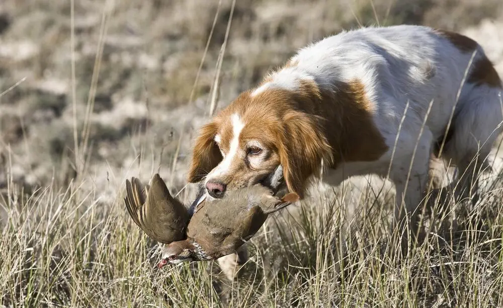

¿Qué es la Caza Menor?
La caza menor se refiere a la actividad de cazar animales de tamaño pequeño, como conejos, perdices, codornices, faisanes, entre otros. Es una forma tradicional de caza que ha existido durante siglos y se realiza generalmente con armas como escopetas de caza o con perros de caza para rastrear a los animales.
Tipos de Animales en la Caza Menor
- Conejos: Son uno de los animales más comunes en la caza menor debido a su alta población y su capacidad para habitar en diversas zonas.
- Perdices: Son aves muy apreciadas en la caza menor, tanto por su número como por la calidad de su carne.
- Faisanes: A menudo criados en granjas para ser liberados en zonas de caza, son un objetivo popular para los cazadores.
- Codornices: Pequeñas aves migratorias que son muy populares para la caza en diferentes partes del mundo.
Equipos y Técnicas de Caza Menor
Existen diversas herramientas y métodos para llevar a cabo la caza menor, dependiendo del animal y el entorno:
- Escopetas: Son las armas más comunes para la caza menor. Las escopetas de calibre bajo son ideales para disparos a corta distancia.
- Perros de Caza: Los perros son usados para rastrear y encontrar la caza. Algunas razas son especialmente entrenadas para este propósito.
- Trampas: En algunas situaciones, las trampas son utilizadas para capturar pequeños animales sin la necesidad de disparar.
- Escuelas de Caza: Los cazadores más experimentados a menudo reciben formación o instrucción de expertos en técnicas y seguridad de caza.
Normativas y Regulación de la Caza Menor
La caza menor está regulada por leyes y normativas que varían según el país o la región. Generalmente, se requiere una licencia de caza, y hay temporadas específicas en las que está permitido cazar ciertos animales.
Es importante conocer y seguir las regulaciones locales para evitar daños a las especies en peligro de extinción y garantizar prácticas de caza sostenibles.